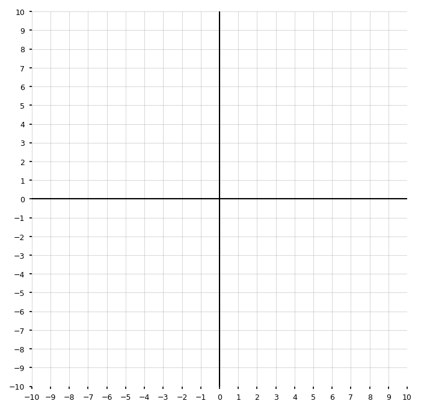

For each quadratic equation, identify \(a\), \(b\), and \(c\).
\(x^2+5x+6=0\)
\(2x^2-7x+3=0\)
\(-3x^2+4x-9=0\)
\(x^2-16=0\)
Calculate the discriminant \(\Delta=b^2-4ac\) for each equation.
\(x^2-6x+8=0\)
\(x^2+4x+4=0\)
\(x^2+2x+5=0\)
For each value of \(\Delta\), state the number of real solutions.
\(\Delta=25\)
\(\Delta=0\)
\(\Delta=-12\)
\(\Delta=3\)
Fill in the blanks.
If \(\Delta>0\), the quadratic equation has ______ real solution(s).
If \(\Delta=0\), the quadratic equation has ______ real solution(s).
If \(\Delta<0\), the quadratic equation has ______ real solution(s).
Which equation has exactly one real solution?
\(x^2-10x+25=0\)
\(x^2-10x+21=0\)
\(x^2-10x+30=0\)
\(x^2+10x+21=0\)
Explain how you know.
Which equation has no real solutions?
\(x^2+6x+9=0\)
\(x^2+6x+5=0\)
\(x^2+6x+10=0\)
\(x^2-6x+5=0\)
Explain how you know.
For each equation, decide whether the solutions are rational, irrational, or non-real.
\(x^2-8x+12=0\)
\(x^2-8x+10=0\)
\(x^2-8x+20=0\)
Match each equation to the description of its graph.
\(y=x^2-4x+4\)
\(y=x^2-4x+1\)
\(y=x^2-4x+9\)
Descriptions:
crosses the \(x\)-axis twice
touches the \(x\)-axis once
does not touch the \(x\)-axis
For each expression, state what number must be added to complete the square.
\(x^2+10x\)
\(x^2-14x\)
\(x^2+3x\)
\(x^2-\frac{2}{3}x\)
Rewrite each expression as a perfect square trinomial.
\(x^2+12x+\_\_\_\)
\(x^2-18x+\_\_\_\)
\(x^2+5x+\_\_\_\)
Which expression is equivalent to:
\[x^2-6x+9\]
\((x-3)^2\)
\((x+3)^2\)
\((x-6)^2\)
\((x-9)^2\)
A student says:
“The discriminant tells me the solutions without solving.”
What is correct about this statement? What needs to be clarified?
Solve by completing the square.
\[x^2+8x+7=0\]
Solve by completing the square.
\[x^2-10x+6=0\]
Solve by completing the square.
\[x^2+6x-2=0\]
Solve by completing the square.
\[x^2-4x-11=0\]
Rewrite each quadratic in vertex form by completing the square.
\(y=x^2+6x+2\)
\(y=x^2-8x+5\)
\(y=x^2+10x-7\)
Rewrite in vertex form by completing the square.
\[y=2x^2+12x+7\]
Then identify the vertex.
Rewrite in vertex form by completing the square.
\[y=-3x^2+18x-5\]
Then identify the vertex and state whether it is a maximum or minimum.
Solve using the quadratic formula.
\[x^2-7x+10=0\]
Then explain why the result matches what factoring would give.
Solve using the quadratic formula.
\[2x^2-5x-3=0\]
Solve using the quadratic formula.
\[3x^2+4x-2=0\]
Give exact answers.
Solve using the quadratic formula.
\[5x^2-6x+1=0\]
Solve using the quadratic formula.
\[4x^2+4x+5=0\]
Then explain why the graph has no \(x\)-intercepts.
Solve using the quadratic formula.
\[2x^2+3x+7=0\]
Give exact non-real solutions.
For each equation:
calculate \(\Delta\)
predict the number of real solutions
solve if real solutions exist
\(x^2-12x+36=0\)
\(x^2-12x+20=0\)
\(x^2-12x+40=0\)
Solve each equation. Choose either completing the square or the quadratic formula.
\(x^2+2x-15=0\)
\(x^2+2x-7=0\)
\(x^2+2x+10=0\)
Explain why your chosen method made sense.
Solve for \(x\).
\[(2x-3)^2+6(2x-3)+5=0\]
Hint: Let \(u=2x-3\), or solve directly.
Solve for \(x\).
\[(x+4)^2-10(x+4)+21=0\]
Explain how substitution can make the equation easier.
Solve for \(x\).
\[x-6\sqrt{x}+8=0\]
Hint: Let \(u=\sqrt{x}\). Check your solutions.
A student solves:
\[x^2+10x+7=0\]
by writing:
\[x^2+10x+25=7+25\]
and then:
\[(x+5)^2=32\]
Identify the error and solve correctly.
A student calculates the discriminant for:
\[2x^2-3x+8=0\]
as:
\[\Delta=(-3)^2-4(2)(8)=9-64=-55\]
“Since the discriminant is negative, there are no solutions.”
What should the student have said instead? Explain carefully.
A student uses the quadratic formula on:
\[3x^2+5x-2=0\]
and writes:
\[x=\frac{-5\pm\sqrt{5^2-4(3)(-2)}}{2}\]
Identify the mistake and solve correctly.
A student says:
“Completing the square is only useful for solving equations.”
Explain why this is not true. Use the equation below to support your answer.
\[y=x^2-6x+11\]
Compare the solution methods for:
\[x^2-14x+49=0\]
Solve by factoring.
Solve by completing the square.
Solve using the quadratic formula.
Explain why all three methods produce the same result.
Compare the solution methods for:
\[x^2-6x+2=0\]
Solve by completing the square.
Solve using the quadratic formula.
Explain which method you prefer and why.
For each equation, choose the most efficient method: factoring, completing the square, or quadratic formula. Then justify your choice.
\(x^2-9x+20=0\)
\(x^2+4x-1=0\)
\(3x^2-8x+2=0\)
\(x^2+12x+36=0\)
A quadratic function has no \(x\)-intercepts. What must be true about its discriminant?
Explain how this connects the equation, graph, and solutions.
A quadratic function has exactly one \(x\)-intercept at \(x=5\).
What must be true about the discriminant?
What must be true about the vertex?
Write one possible equation for the function.
The equation:
\[x^2-8x+k=0\]
has exactly one real solution.
Find the value of \(k\).
Explain using the discriminant.
Explain using the graph.
The equation:
\[x^2+4x+k=0\]
has no real solutions.
Give two possible values of \(k\).
Explain how you know.
Describe where the graph is located relative to the \(x\)-axis.
The table shows values of a quadratic function.
| \(x\) | \(-1\) | \(0\) | \(1\) | \(2\) | \(3\) |
|---|---|---|---|---|---|
| \(f(x)\) | \(10\) | \(5\) | \(2\) | \(1\) | \(2\) |
Identify the vertex.
Write the equation in vertex form.
Rewrite the equation in standard form.
Use the discriminant to determine how many real zeros the function has.
Explain how the table and discriminant agree.
A ball is thrown upward from a platform. Its height is modeled by:
\[h(t)=-16t^2+48t+64\]
where \(h(t)\) is height in feet and \(t\) is time in seconds.
Rewrite the function in vertex form by completing the square.
Identify and interpret the vertex.
Use the quadratic formula to determine when the ball hits the ground.
Explain why one solution may not make sense in context.
State a reasonable domain for the model.
A company models profit by:
\[P(x)=-2x^2+24x-50\]
where \(x\) is the number of items sold in hundreds and \(P(x)\) is profit in thousands of dollars.
Complete the square to rewrite the function in vertex form.
Interpret the vertex in context.
Use the discriminant to determine whether the company has break-even points.
Find the break-even points exactly.
Explain what interval of \(x\)-values gives positive profit.
A quadratic equation has discriminant \(\Delta=0\).
Explain what this means algebraically.
Explain what this means graphically.
Create one quadratic equation with this property.
Solve your equation using two different methods.
Explain why both methods agree.
A quadratic equation has no real solutions.
Create one example in standard form.
Calculate the discriminant to prove it has no real solutions.
Rewrite your equation as a function and describe its graph.
Explain how the vertex confirms your discriminant result.
Two students solve the same equation:
\[2x^2-8x-3=0\]
Student A uses completing the square.
Student B uses the quadratic formula.
Solve the equation using completing the square.
Solve the equation using the quadratic formula.
Show that the answers are equivalent.
Explain which method is more efficient for this equation and why.
The function:
\[f(x)=x^2-10x+c\]
has two real zeros when \(c=9\), one real zero when \(c=25\), and no real zeros when \(c=30\).
Verify each claim using the discriminant.
Rewrite each function in vertex form.
Explain how changing \(c\) moves the graph.
Explain why changing \(c\) changes the number of \(x\)-intercepts.
A rectangle has area \(60\text{ square units}\). Its length is \(x+4\) and its width is \(x-3\).
Write a quadratic equation that models the situation.
Solve using the quadratic formula.
Explain why one solution is not reasonable in context.
Find the rectangle’s dimensions.
Verify that the dimensions give the correct area.
Create a quadratic equation that satisfies all of the following:
the solutions are irrational
the graph opens upward
the vertex is below the \(x\)-axis
the equation is not easily solved by factoring over the integers
Then:
Write your equation in standard form.
Calculate the discriminant.
Solve the equation exactly.
Sketch a possible graph.
Explain why your equation satisfies every condition.
